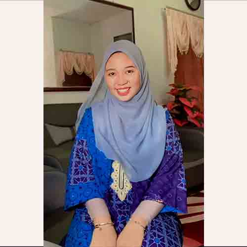

Biodata
My full name is Nur Aina'a Aishah Bt. Mohamad . I was born as Malaysian Malay on August 28th, 2000 in Kelantan. Currently, I am in Penang doing my degree. I am first year student of School of The Art, University Science Malaysia (USM), majored in Graphic Communication.
I know that I will have to choose a career I want to pursue in my future. I plan on becoming a graphic designer because I have experienced with technology and art since i have done my diploma in indutrial design. I have been drawing and painting on the computer .
I’ve also done both on paper. I feel that it is something I am lover in and that I will be very successful doing in a career. There will be requirements and duties I will have to be responsible for, in order to excel in being a graphic designer.
Photo
